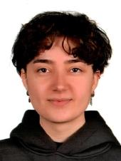

BANA
DAİR.
Bir şeyin nasıl çalıştığını merak ederek başlayan, öğrenip denedikçe büyüyen bir yolculuk.
KENDİ
YOLUMU
ÇİZİYORUM.

20 yaşındayım. Akdeniz Üniversitesi Teknik Bilimler Meslek Yüksekokulu Bilgisayar Programcılığı bölümünde 2. sınıf öğrencisiyim.
Teknolojiye ve bilgisayarlara duyduğum ilgiyle yazılım geliştirme, web teknolojileri ve dijital üretim alanlarında kendimi geliştiriyorum. Yeni şeyler öğrenmeyi, denemeler yapmayı ve fikirleri çalışan projelere dönüştürmeyi seviyorum.
Python, SQL, C# ve web geliştirme temelleri üzerine çalışıyorum. Video kurgu ve görsel anlatım becerilerimi de geliştirerek teknik ve yaratıcı tarafımı birlikte ilerletmek istiyorum.
YETENEKLERİM / İLGİ ALANLARIMEĞİTİM
Akademik yolculuğum
Akdeniz Üniversitesi
Teknik Bilimler Meslek Yüksekokulu · Bilgisayar Programcılığı · 2. Sınıf
Mehmet Tuğrul Tekbulut
Mesleki Ve Teknik Anadolu Lisesi · Yazılım Geliştirme · Mezun